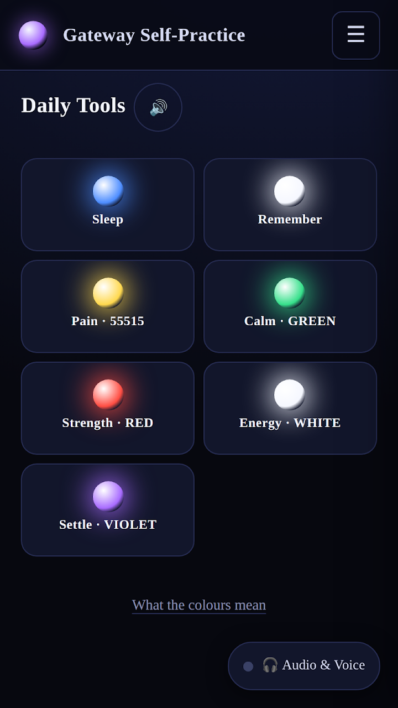
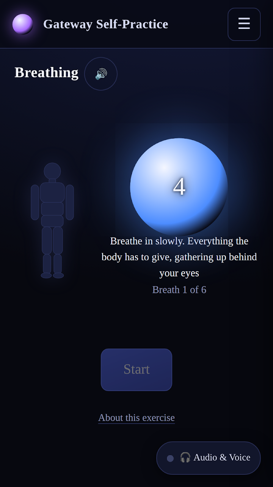
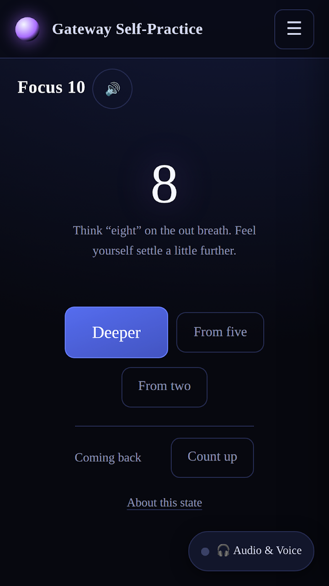
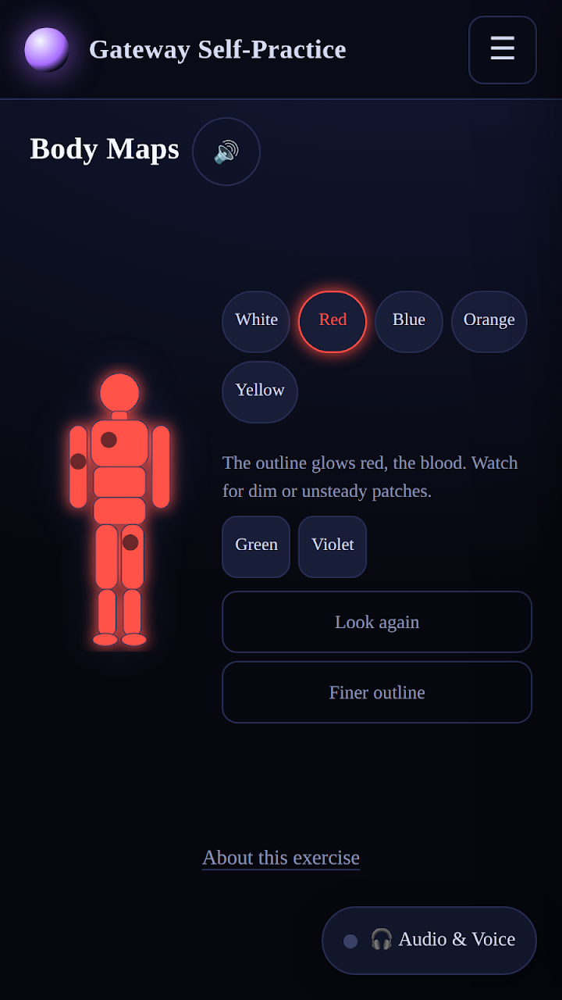
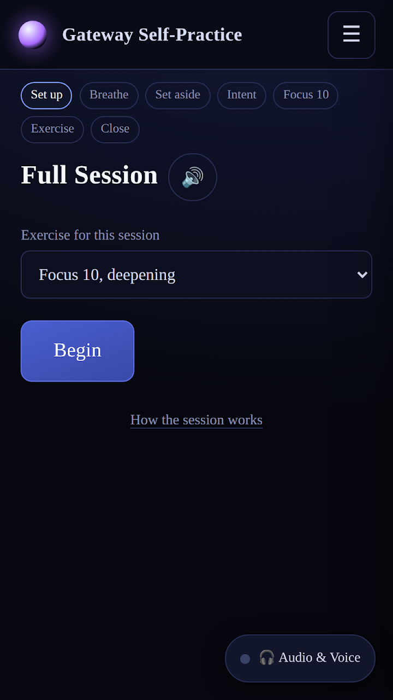

A quiet, fully offline trainer for relaxation, breathing and visualization exercises.
GET IT ONGoogle PlayA practice tool, not a course and not a subscription. Built around color, breath and sound — not reading.
The same frame around every exercise: paced breathing, setting worries aside, stating intent, a countdown into calm, the exercise itself, then counting back up and journaling what happened.
An animated six-breath cycle with per-second counting inside the breath marker — in for six, hold for ten, out for eight.
Standalone trainers for the two states the practice builds toward, each with its own countdown, count-back and instant return.
Energy bar, body maps and REBAL — imagination exercises drawn as interactive color over a body outline.
Short full-screen color-and-breath practices you can run in just a few minutes.
A tone generator playing a slightly different pitch in each ear, plus on-device voice guidance so you can practice with eyes closed.
Real screens from the app — dark, calm, and built for following with your eyes, not reading.





The app doesn't even request internet permission, so technically it cannot send anything anywhere. Your journal and settings live only on your device and are removed when you uninstall.
Please note: these are relaxation and visualization exercises. They are not medical treatment — they don't diagnose, treat, cure or prevent any disease, and they're no substitute for seeing a doctor about real symptoms, including pain. If you have a seizure disorder, heart condition or serious mental health condition, talk to a doctor before deep relaxation or breath-holding practice. Practice lying or sitting somewhere safe — never while driving or operating machinery.